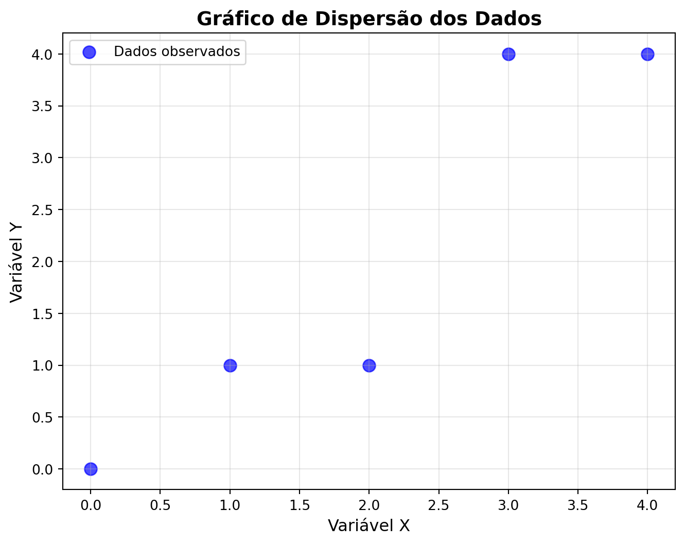
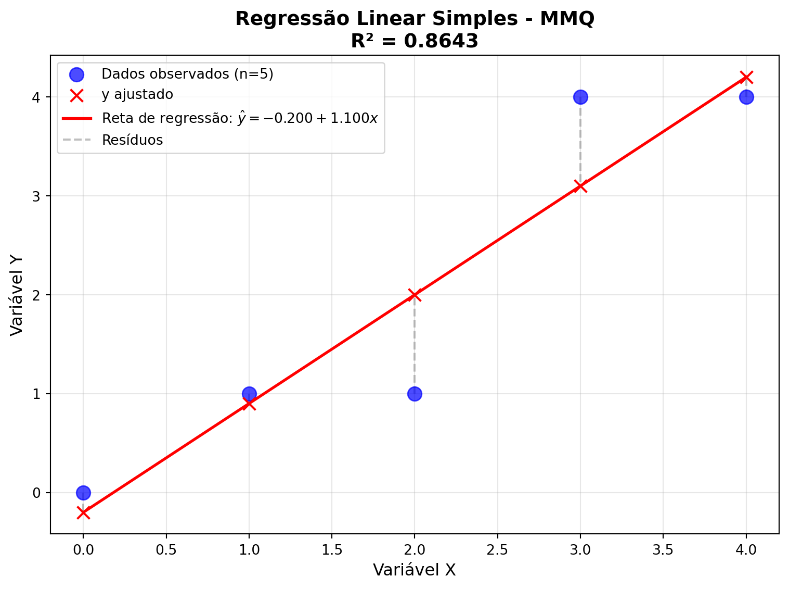

import pandas as pd # Para manipulação de dados
import matplotlib.pyplot as plt # Para criar gráficos
import seaborn as sns # Para gráficos mais bonitos
import numpy as np # Para operações matemáticas e matriciaisMétodo dos Mínimos Quadrados na Regressão Linear Simples
Implementação em Python usando Álgebra Matricial
Tutorial prático para implementar o método dos mínimos quadrados em Python, aplicando os conceitos de álgebra linear e estatística básica.
1 📚 Introdução
Objetivos
Neste tutorial, vamos implementar o Método dos Mínimos Quadrados (MMQ) em Python para ajustar um modelo de regressão linear simples.
Objetivo: Encontrar os coeficientes \(\beta_0\) e \(\beta_1\) da equação \(\hat{y} = \beta_0 + \beta_1 x\) que melhor se ajustam aos nossos dados.
2 🛠️ Importando as Bibliotecas
Primeiro, vamos importar as bibliotecas que usaremos:
💡 Dica: No Google Colab, essas bibliotecas já vêm instaladas!
3 📊 Definindo os Dados
Vamos trabalhar um exemplo simples em que \(x\) e \(y\) são inseridos como listas em Python:
# Nossos dados de exemplo
x = [0, 1, 2, 3, 4] # Variável independente (preditora)
y = [0, 1, 1, 4, 4] # Variável dependente (resposta)
print("Valores de x:", x)
print("Valores de y:", y)
print("Número de observações:", len(x))Valores de x: [0, 1, 2, 3, 4]
Valores de y: [0, 1, 1, 4, 4]
Número de observações: 54 📈 Visualizando os Dados
Antes de ajustar o modelo, vamos visualizar nossos dados:
# Criando o gráfico de dispersão
plt.figure(figsize=(8, 6))
plt.scatter(x, y, color='blue', marker='o', s=80, alpha=0.7, label='Dados observados')
# Configurando o gráfico
plt.title('Gráfico de Dispersão dos Dados', fontsize=14, fontweight='bold')
plt.xlabel('Variável X', fontsize=12)
plt.ylabel('Variável Y', fontsize=12)
plt.grid(True, alpha=0.3)
plt.legend()
plt.show()
📝 Observação: O gráfico sugere uma relação linear entre as variáveis, o que justifica o uso da regressão linear simples.
5 🧮 Implementando o MMQ - Passo a Passo
5.1 Criando os Vetores Base
Lembre-se da teoria: precisamos dos vetores \(\vec{f}_0\), \(\vec{f}_1\) e \(\vec{y}\):
\[\vec{f}_0 = \begin{bmatrix} 1 \\ 1 \\ \vdots \\ 1 \end{bmatrix} \quad \text{,} \quad \vec{f}_1 = \begin{bmatrix} x_1 \\ x_2 \\ \vdots \\ x_n \end{bmatrix} \quad \text{e} \quad \vec{y} = \begin{bmatrix} y_1 \\ y_2 \\ \vdots \\ y_n \end{bmatrix}\]
# Número de observações
n = len(x)
# Vetor f0: vetor de 1's (para o intercepto β₀)
f0 = [1] * n # Cria uma lista com n elementos iguais a 1
# Vetor f1: nossos valores de x (para o coeficiente β₁)
f1 = x.copy() # Copia os valores de x
print("Vetor f0 (intercepto):", f0)
print("Vetor f1 (coeficiente):", f1)Vetor f0 (intercepto): [1, 1, 1, 1, 1]
Vetor f1 (coeficiente): [0, 1, 2, 3, 4]5.2 Construindo as Matrizes X e Y
Agora vamos montar as matrizes do sistema:
\[X = \begin{bmatrix} \vec{f}_0 & \vec{f}_1 \end{bmatrix} = \begin{bmatrix} 1 & x_1 \\ 1 & x_2 \\ \vdots & \vdots \\ 1 & x_n \end{bmatrix} \quad \text{e} \quad Y = \begin{bmatrix} \vec{y} \end{bmatrix} = \begin{bmatrix} y_1 \\ y_2 \\ \vdots \\ y_n \end{bmatrix}\]
# Matriz X: combinando f0 e f1 em colunas
X = np.column_stack((f0, f1))
# Matriz Y: transformando y em matriz com n linhas e 1 coluna
Y = np.array(y).reshape(n, 1)
print("Matriz X:")
print(X)
print("\nMatriz Y:")
print(Y)
print(f"\nDimensões - X: {X.shape}, Y: {Y.shape}")Matriz X:
[[1 0]
[1 1]
[1 2]
[1 3]
[1 4]]
Matriz Y:
[[0]
[1]
[1]
[4]
[4]]
Dimensões - X: (5, 2), Y: (5, 1)5.3 Resolvendo o Sistema Normal
Agora vamos calcular os coeficientes usando a fórmula:
\[\boldsymbol{\hat{\beta}} = (X^T X)^{-1} X^T Y\]
# Calculando X transposta vezes X
XTX = np.dot(X.T, X) # X.T é a transposta de X
print("X^T X:")
print(XTX)
# Calculando X transposta vezes Y
XTY = np.dot(X.T, Y)
print("\nX^T Y:")
print(XTY)
# Calculando os coeficientes: B = (X^T X)^(-1) (X^T Y)
XTX_inv = np.linalg.inv(XTX) # Inversa de X^T X
B = np.dot(XTX_inv, XTY)
print("\n🎯 Coeficientes estimados:")
print(f"β₀ (intercepto) = {B[0, 0]:.4f}")
print(f"β₁ (inclinação) = {B[1, 0]:.4f}")X^T X:
[[ 5 10]
[10 30]]
X^T Y:
[[10]
[31]]
🎯 Coeficientes estimados:
β₀ (intercepto) = -0.2000
β₁ (inclinação) = 1.1000📚 Interpretação:
- \(\beta_0\): valor de y quando x = 0
- \(\beta_1\): o quanto y aumenta para o aumento de uma unidade em x
Nota
A função ´np.dot()´ em Python também pode ser substituída pelo símbolo @. Teste os códigos abaixo e verifique que os resultados coincidem:
print("Usando np.dot()")
print(np.dot(X.T, X))Usando np.dot()
[[ 5 10]
[10 30]]print("Usando '@'")
print(X.T @ X)Usando '@'
[[ 5 10]
[10 30]]5.4 Avaliando a Qualidade do Ajuste
Vamos calcular o coeficiente de determinação \(R^2\):
# Valores ajustados (preditos)
Y_ajustado = np.dot(X, B)
# Resíduos: diferença entre valores observados e ajustados
residuos = Y - Y_ajustado
# Soma dos Quadrados dos Resíduos
SQres = np.dot(residuos.T, residuos)[0, 0]
# Soma dos Quadrados Total
Y_medio = np.mean(Y)
desvios_media = Y - Y_medio
SQtot = np.dot(desvios_media.T, desvios_media)[0, 0]
# Coeficiente de Determinação R²
R2 = 1 - (SQres / SQtot)
print("📊 Medidas de Qualidade do Ajuste:")
print(f"Soma dos Quadrados dos Resíduos (SQres): {SQres:.4f}")
print(f"Soma dos Quadrados Total (SQtot): {SQtot:.4f}")
print(f"Coeficiente de Determinação (R²): {R2:.4f}")
print(f"Porcentagem da variação explicada: {R2*100:.2f}%")📊 Medidas de Qualidade do Ajuste:
Soma dos Quadrados dos Resíduos (SQres): 1.9000
Soma dos Quadrados Total (SQtot): 14.0000
Coeficiente de Determinação (R²): 0.8643
Porcentagem da variação explicada: 86.43%📝 Interpretação do \(R^2\):
- Varia de 0 a 1
- Quanto mais próximo de 1, melhor o ajuste
- Representa a proporção da variação em \(y\) explicada pelo modelo
6 📊 Visualizando o Resultado Final
Vamos plotar os dados originais junto com a reta ajustada:
# Criando pontos para desenhar a reta
y_ajustados = B[0, 0] + B[1, 0] * np.array(x) # Equação da reta: y = β₀ + β₁x
print("y_ajustados:")
print(y_ajustados)y_ajustados:
[-0.2 0.9 2. 3.1 4.2]# Criando o gráfico final
plt.figure(figsize=(8, 6))
# Pontos observados
plt.scatter(x, y, color='blue', marker='o', s=100, alpha=0.7,
label=f'Dados observados (n={n})', zorder=3)
# Valores ajustados
Y_pontos = B[0, 0] + B[1, 0] * np.array(x)
plt.scatter(x, Y_pontos, color='red', marker='x', s=80,
label='y ajustado', zorder=3)
# Reta ajustada
plt.plot(x, y_ajustados, color='red', linewidth=2,
label=fr'Reta de regressão: $\hat{{y}} = {B[0,0]:.3f} + {B[1,0]:.3f}x$')
# Linhas dos resíduos
for i in range(len(x)):
plt.plot([x[i], x[i]], [y[i], Y_pontos[i]], 'gray', linestyle='--', alpha=0.5, label = 'Resíduos' if i == 0 else '')
# Configurações do gráfico
plt.title(f'Regressão Linear Simples - MMQ\nR² = {R2:.4f}',
fontsize=14, fontweight='bold')
plt.xlabel('Variável X', fontsize=12)
plt.ylabel('Variável Y', fontsize=12)
plt.grid(True, alpha=0.3)
plt.legend(fontsize=10)
plt.tight_layout()
plt.show()
7 🎯 Resumo dos Resultados
print("="*50)
print(" RESUMO DA REGRESSÃO LINEAR")
print("="*50)
print(f"Equação ajustada: y = {B[0,0]:.4f} + {B[1,0]:.4f}x")
print(f"Coeficiente de determinação (R²): {R2:.4f}")
print(f"Porcentagem da variação explicada: {R2*100:.2f}%")
print("="*50)==================================================
RESUMO DA REGRESSÃO LINEAR
==================================================
Equação ajustada: y = -0.2000 + 1.1000x
Coeficiente de determinação (R²): 0.8643
Porcentagem da variação explicada: 86.43%
==================================================8 🚀 Exercício Prático
Teste o código com novos dados:
# Experimente com estes dados:
x_novo = [1, 2, 3, 4, 5, 6]
y_novo = [2, 4, 5, 4, 5, 7]
# Implemente todo o processo do MMQ com os novos dados
# Dica: você pode copiar e adaptar o código acima!